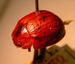
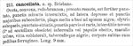

Click on images to enlarge
.jpg)
Paropsis cancellata type specimen, lateral view
.jpg)
Paropsis cancellata type specimen, posterior view
.jpg){kind=link}

Paropsis cancellata type specimen, oblique view
.jpg)
Paropsis cancellata type specimen, labels
{kind=link}

Paropsis cancellata, description
Name
Trachymela cancellata (Chapuis, 1877)
Type specimen
Location: RBINS
Label data: "Brisbane"; “Coll. Chapuis”, "TYPE", "Type", “P. cancellata Chp Brisbane”, “Trachymela cancellata (Chap.) ref. M. Daccordi 2003”
Female (?); Length 9 mm (from original description)
Similar species
This is very much like a paler version of T. asperula (Chapuis), with the rows of verrucae on the elytra slightly darker than most of the rest of the elytral surface. This is almost certainly a specimen of Ta09, showing the slight differences in colouring of southern specimens of that species.
References
Chapuis, F. 1877, "Synopsis des espèces du genre Paropsis", Annales de la Société Entomologique de Belgique (Comptes-rendus), vol. 20, 67-101 (page 95).
Copyright © 2026. All rights reserved.